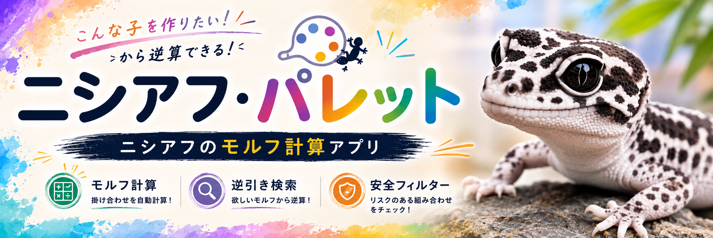

爬虫類から観賞魚まで、実際にお世話をしている飼い主目線で、飼育方法や使っている道具、便利な計算ツールをジャンルごとにまとめています。
気になる生きものをタップしてください
飼育に必要な道具、日々のお世話のポイント、モルフ(品種)交配予測ツール「ニシアフ・パレット」をまとめて紹介しています。
見てみる →
親のモルフを選ぶだけで、生まれてくる子の見た目と確率を予測。欲しいモルフから親の組み合わせを逆算検索することもできます。
使ってみる →容器・水・置き場所の準備から、日々のお世話、夏や台風・冬越しの対策、産卵と稚魚の育て方まで、屋外でも室内でも通用する基本をまとめています。
見てみる →いきもの日和のキャラクター「めだかちゃん」のLINEスタンプを紹介しています。LINE Creators Marketで販売中。
見てみる →